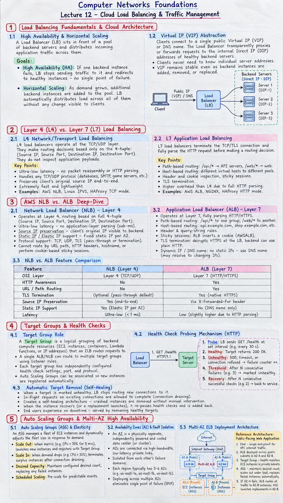

Short Notes & Visual Summary
Handwritten / quick summary notes for Lecture 12:

Click image to open high-resolution version in new tab
Load Balancing Fundamentals & Cloud Architecture
1.1 High Availability & Horizontal Scaling
A Load Balancer (LB) sits in front of a pool of backend servers and distributes incoming application traffic across them. This achieves two goals:
- High Availability (HA): If one backend instance fails, the LB stops sending traffic to it and redirects to healthy instances — no single point of failure.
- Horizontal Scaling: As demand grows, additional backend instances are added to the pool. The LB automatically distributes load across all of them without any change visible to clients.
1.2 Virtual IP (VIP) Abstraction
Clients connect to a single public Virtual IP (VIP) or DNS name. The Load Balancer transparently proxies or forwards requests to the internal Direct IP (DIP) addresses of healthy backend servers. Clients never need to know individual server addresses — the VIP remains stable even as backend instances are added, removed, or replaced.
Layer 4 (L4) vs. Layer 7 (L7) Load Balancing
2.1 L4 Network/Transport Load Balancing
L4 load balancers operate at the TCP/UDP layer. They make routing decisions based only on the 4-tuple: (Source IP, Source Port, Destination IP, Destination Port). They do not inspect application payloads, making them extremely fast and lightweight:
- Ultra-low latency — no packet reassembly or HTTP parsing overhead.
- Handles any TCP/UDP protocol (databases, SMTP, game servers, etc.).
- Preserves the client's original source IP end-to-end (no SNAT by default in NLB).
- Examples: AWS Network Load Balancer (NLB), Linux IPVS, HAProxy TCP mode.
2.2 L7 Application Load Balancing
L7 load balancers terminate the TCP/TLS connection and fully parse the HTTP request before making a routing decision. This enables rich, content-aware routing:
- Path-based routing:
/api/*→ API servers,/web/*→ web servers. - Host-based routing: different virtual hosts routed to different backend pools.
- Header and cookie inspection, sticky sessions, TLS termination.
- Higher overhead than L4 due to full HTTP parsing; slightly higher latency.
- Examples: AWS Application Load Balancer (ALB), NGINX, HAProxy HTTP mode.
AWS NLB vs. ALB Deep-Dive
3.1 Network Load Balancer (NLB) — Layer 4
AWS NLB operates at Layer 4, routing based on the full 4-tuple: (Source IP, Source Port, Destination IP, Destination Port). Key characteristics:
- Ultra-low latency: No application-layer parsing — millions of requests per second with sub-millisecond latency.
- Source IP preservation: The client's original IP is visible to backend EC2 instances end-to-end (no NAT rewrite on the source IP).
- Static IP / Elastic IP support: Each NLB gets a fixed static IP per AZ, which can be whitelisted in firewalls.
- Protocol support: TCP, UDP, TLS (pass-through or termination).
- Cannot route by URL path, HTTP headers, hostname, or perform cookie-based sticky sessions.
3.2 Application Load Balancer (ALB) — Layer 7
AWS ALB operates at Layer 7, fully parsing HTTP/HTTPS. It enables sophisticated content-aware routing:
- Path-based routing: Rules forward
/api/*to one target group and/web/*to another — running multiple microservices behind a single DNS name. - Host-based routing: Route
api.example.comandshop.example.comto separate backend pools using the HTTPHostheader. - Header & query-string rules: Forward or redirect based on any HTTP header or query parameter value.
- Sticky sessions: ALB inserts a cookie (
AWSALB) to pin a client's session to the same target for stateful applications. - TLS termination: Decrypts HTTPS at the LB; backend EC2 instances can operate over plain HTTP internally.
- Dynamic IP / DNS name: ALB does not provide static IPs — clients must use the DNS name (which may resolve to changing IPs).
3.3 NLB vs. ALB Feature Comparison
| Feature | NLB (Layer 4) | ALB (Layer 7) |
|---|---|---|
| OSI Layer | Layer 4 (TCP/UDP) | Layer 7 (HTTP/HTTPS) |
| HTTP Awareness | No | Yes |
| URL / Path Routing | No | Yes |
| TLS Termination | Optional (pass-through default) | Yes (native HTTPS) |
| Source IP Preservation | Yes (end-to-end) | Via X-Forwarded-For header |
| Static IP Support | Yes (Elastic IP per AZ) | No (DNS name only) |
| Latency | Ultra-low (<1 ms) | Low (slightly higher due to HTTP parsing) |
Target Groups & Health Checks
4.1 Target Group Role
A Target Group is a logical grouping of backend compute resources (EC2 instances, containers, Lambda functions, or IP addresses) that an AWS Load Balancer routes requests to. It acts as the intermediary health-monitoring layer between the load balancer and the actual targets:
- A single ALB/NLB can route to multiple target groups using listener rules.
- Each target group has its own independently configured health check settings, port, and protocol.
- Auto Scaling Groups can be associated with a target group so newly launched instances are registered automatically.
4.2 Health Check Probing Mechanism
The load balancer periodically sends health check probes to each registered target. A typical HTTP health check works as follows:
- Probe: LB sends
GET /health HTTP/1.1to each target on the configured port at a set interval (e.g., every 30 seconds). - Healthy response: Target returns
HTTP 200 OK→ target remains in the rotation and continues receiving traffic. - Unhealthy response: Target returns
HTTP 500, connection timeout, or connection refused → failure counter increments. - Threshold: After a configurable number of consecutive failures (e.g., 3), the target is marked Unhealthy and removed from the rotation.
- Recovery: Once a target passes a configurable number of consecutive health checks again (e.g., 2), it is automatically returned to service.
4.3 Automatic Target Removal (Self-Healing Architecture)
When a target is marked unhealthy, the load balancer stops routing new connections to it. In-flight requests on existing connections are allowed to complete (connection draining). This creates a self-healing architecture:
- A crashed EC2 instance is automatically removed from traffic rotation without human intervention.
- When the instance recovers (or a replacement launches via ASG), it re-passes health checks and is automatically added back into the pool.
- End users experience no downtime — they are transparently served by remaining healthy targets throughout the failure and recovery cycle.
Auto Scaling Groups & Multi-AZ High Availability
5.1 Auto Scaling Groups (ASG) & Elasticity
Problem: Real-world traffic is not constant. A service might have 500 users at 8 AM but 50,000 users at 8 PM. Running enough servers to handle the peak 24/7 wastes money; running only enough for the average leaves users with a degraded experience during spikes.
Solution — Elasticity: An Auto Scaling Group (ASG) manages a fleet of EC2 instances and dynamically adjusts the fleet size in response to demand:
- Scale Out (Add capacity): When a CloudWatch metric exceeds a threshold (e.g., average CPU > 70% for 5 minutes), ASG launches new EC2 instances and automatically registers them with the associated Target Group/Load Balancer.
- Scale In (Remove capacity): When demand drops (e.g., average CPU < 30%), ASG terminates surplus instances after connection draining, reducing cost.
- Desired Capacity: The ASG always tries to maintain a configured desired count, replacing any instances that fail health checks.
- Scheduled Scaling: Capacity can be pre-scaled for predictable events (e.g., 9 AM Monday morning surge).
5.2 Availability Zones (AZ) & Fault Isolation
An Availability Zone (AZ) is a physically separate, independently powered and cooled AWS data center (or cluster of data centers) within an AWS Region. AZs within a Region are connected via high-bandwidth, low-latency private fiber links but are isolated from each other's failure domains:
- A power outage, hardware failure, or natural disaster in one AZ does not impact other AZs in the same Region.
- Each AWS Region typically has 3–6 AZs (e.g.,
us-east-1a,us-east-1b,us-east-1c). - Resources deployed across multiple AZs eliminate the single point of failure (SPOF) risk at the data center level.
5.3 Multi-AZ ELB Deployment Architecture
AWS Elastic Load Balancers are inherently multi-AZ. A managed ELB is deployed across multiple public subnets (one per AZ) behind an Internet Gateway (IGW):
- The ELB has a node in each configured AZ. If one AZ fails, the ELB nodes in surviving AZs continue to serve traffic.
- The ASG distributes EC2 backend instances evenly across private subnets in each AZ.
- Traffic flow: Internet → IGW → ELB (public subnets, multi-AZ) → Target Group → EC2 instances (private subnets, multi-AZ).
- Internet Gateway (IGW) — single entry/exit for VPC internet traffic.
- ALB deployed across public subnets in AZ-A and AZ-B — receives all inbound HTTP/HTTPS.
- Target Group — health-monitors EC2 instances in private subnets in AZ-A and AZ-B.
- ASG — maintains desired count of EC2 instances, scales out under load, replaces failed instances automatically.
- If AZ-A fails entirely: ALB routes all traffic to AZ-B instances; ASG launches replacements in AZ-B.
Original PDF Notes
Below is the original PDF document for reference: